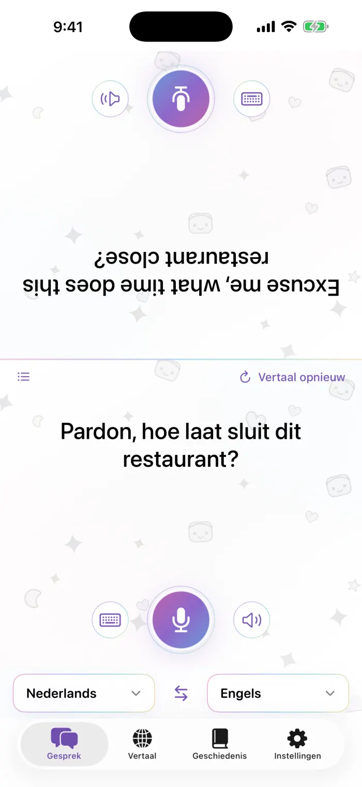
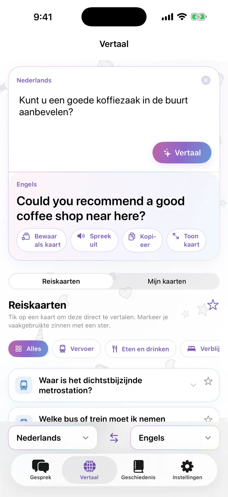
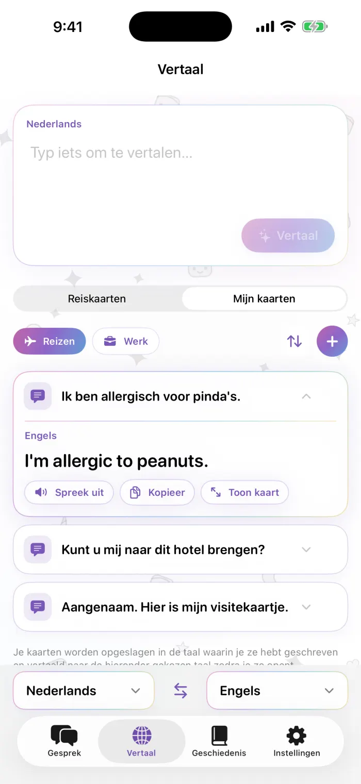
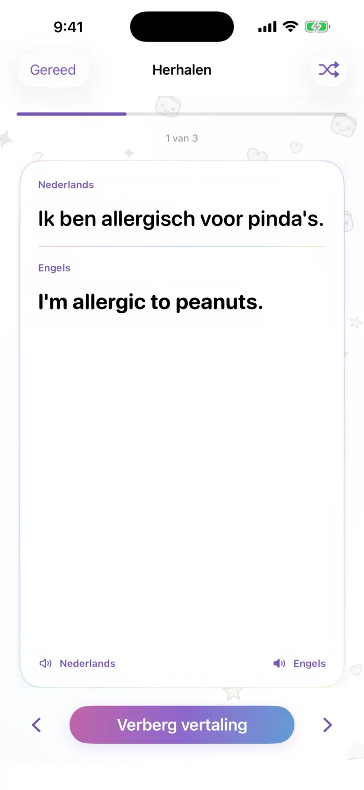

Support
Antwoorden op veelgestelde vragen over Vertaalgelei. Staat jouw vraag er niet tussen? Schrijf ons gerust, we lezen elk bericht.
sona.orbit.hi@gmail.com
Laat ons weten welk iPhone-model je hebt, welke iOS-versie je gebruikt en welke twee talen je op dat moment gebruikte.
Veelgestelde vragen
Hoe download ik een taal?
Open het tabblad Instellingen in de app en ga naar Offline talen. Talen die al op je iPhone staan, worden bovenaan getoond. Tik naast het gewenste taalpaar op Download en volg het downloadvenster van Apple. Als een vertaling aangeeft dat het taalpaar eerst gedownload moet worden, tik je op Download en probeer opnieuw.
Werkt de app ook offline?
Ja. Zodra beide talen van een paar zijn gedownload, vertaal je zonder internetverbinding. Het netwerk wordt alleen gebruikt om talen te downloaden.
De app kan me niet horen. Wat nu?
Vertaalgelei heeft toegang nodig tot de microfoon en spraakherkenning. Ga naar Instellingen > Privacy en beveiliging > Microfoon en naar Instellingen > Privacy en beveiliging > Spraakherkenning en zet Vertaalgelei aan. Bij sommige talen kun je op bepaalde apparaten wel typen, maar werkt spraakherkenning niet.
Vertalingen worden niet voorgelezen, of de stem ontbreekt.
Je iPhone heeft een stem voor die taal nodig. Ga naar Instellingen > Toegankelijkheid > Gesproken content > Stemmen, kies de taal en download een stem. Controleer ook of de beltoon-/stilteschakelaar en het volume goed staan.
Hoe herstel ik mijn aankoop op een nieuwe iPhone?
Log in met hetzelfde Apple Account, open het Pro-scherm in de app en tik op Herstel aankopen.
Hoe zeg ik mijn abonnement op?
Abonnementen worden beheerd door Apple. Ga naar Instellingen, tik op je naam en daarna op Abonnementen, kies Vertaalgelei en tik op Zeg abonnement op. Je houdt Pro tot het einde van de lopende periode.
Hoeveel eigen kaarten kan ik gratis maken?
De gratis versie bevat 3 eigen kaarten. Met Pro is er geen limiet, dus je kunt zoveel kaarten en stapels maken als je wilt. De ingebouwde reiskaarten zijn altijd gratis.
Welke talen worden ondersteund?
Ongeveer 20 talen: de talen die Apple ondersteunt voor vertalen op het apparaat. Talen die je al hebt gedownload, staan bovenaan de lijst.
Waarom zie ik advertenties, en hoe haal ik ze weg?
De gratis versie toont één kleine banner bovenaan het scherm (in een gesprek blijft die aan jouw kant en verschijnt hij nooit aan de kant die naar de ander is gedraaid). Met elk Pro-abonnement verdwijnen alle advertenties. Wat je zegt of vertaalt wordt nooit voor advertenties gebruikt.
Waar vind ik mijn geschiedenis?
Alles wat je vertaalt, blijft op je iPhone bewaard. Bladeren, zoeken en het herhalen met flashcards in je geschiedenis zijn onderdeel van Pro. Als je upgradet, ontgrendel je alles wat je al hebt vertaald.
Het gebruik van Vertaalgelei valt onder de standaard licentieovereenkomst voor eindgebruikers van Apple. https://www.apple.com/legal/internet-services/itunes/dev/stdeula/
Zo werkt de app
Echte schermen uit de app. De nummers horen bij de toelichting naast elk scherm.

Gesprek
- De kant van de ander, ondersteboven zodat die het aan de overkant van de tafel kan lezen
- Tik op de microfoon om te spreken
- Typ in plaats van spreken
- Speel de vertaling nog een keer af
- Kies beide talen; met de pijltjes in het midden wissel je de richting om
- Vertaal de laatste zin opnieuw nadat je een taal hebt gewijzigd
- Schakel over naar een lijstweergave

Vertaal
- Typ wat je wilt zeggen
- Vertaal
- De vertaling
- Bewaar als kaart, laat voorlezen, kopieer of toon volledig scherm
- Wissel tussen reiskaarten en je eigen kaarten

Mijn kaarten
- Stapels: reizen, werk of je eigen stapel
- Kaarten ordenen: volgorde wijzigen, verwijderen, hernoemen
- Voeg een kaart toe
- Tik op een kaart om de vertaling meteen op de kaart te zien

Herhalen
- Origineel
- Vertaling, zichtbaar met een tik
- Toon of verberg de vertaling
- Vorige/volgende kaart (of veeg)
- Willekeurig